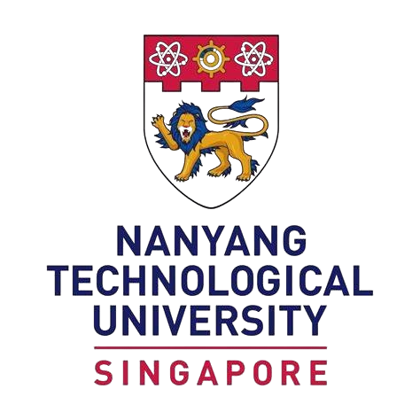
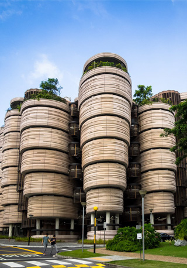
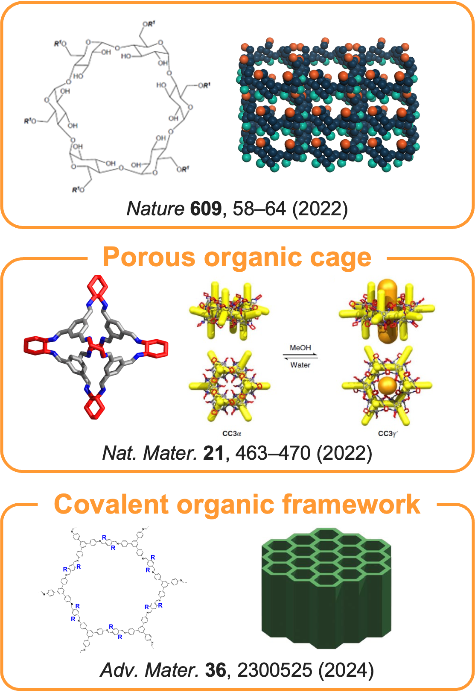

Dr. Zhiwei Jiang
Assistant Professor
School of Chemistry, Chemical Engineering and Biotechnology (CCEB)
Nanyang Technological University

Welcome to Zhiwei Jiang's Research Group Website
We aim to develop Ultrathin Nanofilm of Interconnected Cavity (UNIC), enabling sustainable membrane separations.
About
Learn about our group's research areas in membrane fabrication, cavity design, and advanced separations.
Read more →Publications
Explore our recent publications in top-tier journals on membrane science and engineering breakthroughs.
View all →Group Highlights

See group awards, presentations, collaborations, and key achievements from our lab and beyond.
Discover more →